Share kit
Post text for every game, made from the game pages. Tap a button to copy it, then paste it into Facebook, Pinterest or YouTube. The same data is at /social.json. Nothing here posts anything for you.
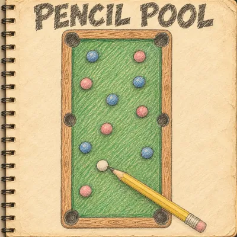
Pencil Pool
https://www.sketchpadarcade.com/pencil-pool
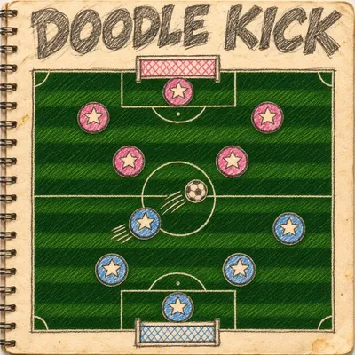
Doodle Kick
https://www.sketchpadarcade.com/doodle-kick
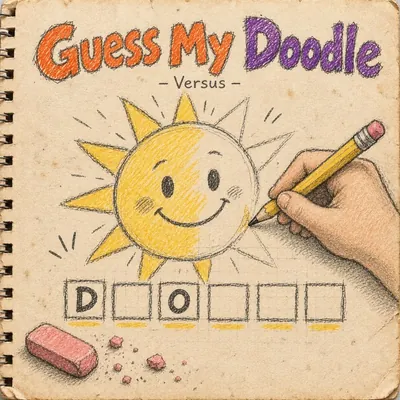
Guess My Doodle
https://www.sketchpadarcade.com/guess-my-doodle
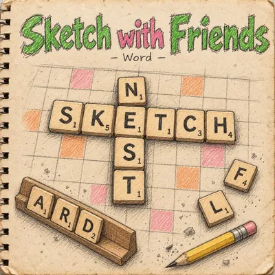
Sketch with Friends
https://www.sketchpadarcade.com/sketch-with-friends
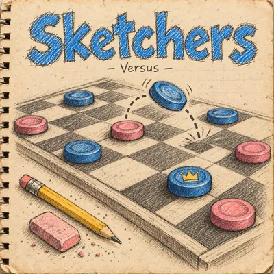
Sketchers
https://www.sketchpadarcade.com/sketchers
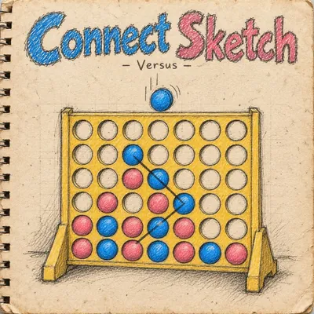
Connect Sketch
https://www.sketchpadarcade.com/connect-sketch
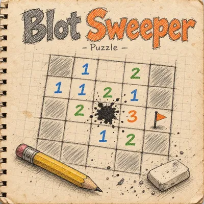
Blot Sweeper
https://www.sketchpadarcade.com/blot-sweeper
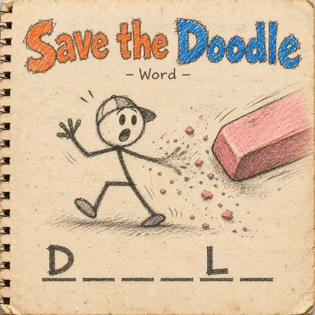
Save the Doodle
https://www.sketchpadarcade.com/save-the-doodle
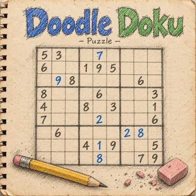
Doodle Doku
https://www.sketchpadarcade.com/doodle-doku
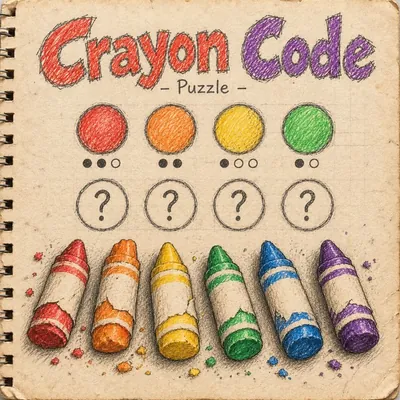
Crayon Code
https://www.sketchpadarcade.com/crayon-code
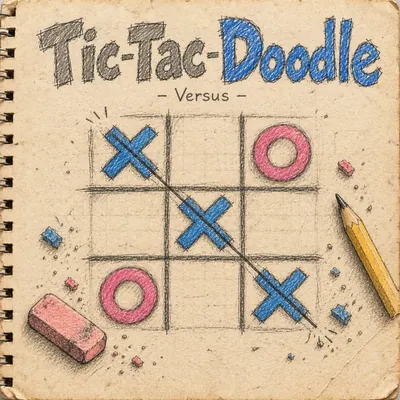
Tic-Tac-Doodle
https://www.sketchpadarcade.com/tic-tac-doodle
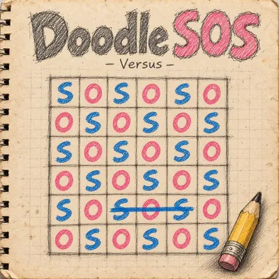
Doodle SOS
https://www.sketchpadarcade.com/doodle-sos
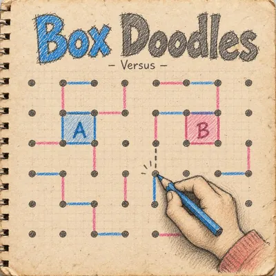
Box Doodles
https://www.sketchpadarcade.com/box-doodles
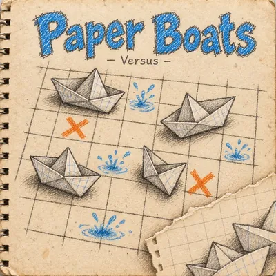
Paper Boats
https://www.sketchpadarcade.com/paper-boats
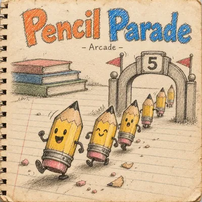
Pencil Parade
https://www.sketchpadarcade.com/pencil-parade
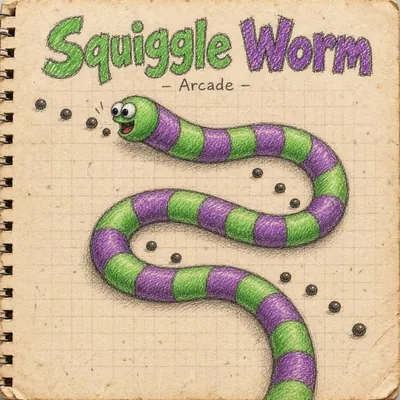
Squiggle Worm
https://www.sketchpadarcade.com/squiggle-worm
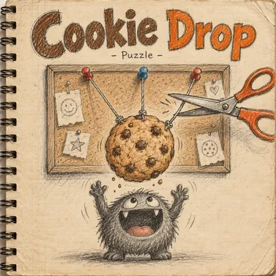
Cookie Drop
https://www.sketchpadarcade.com/cookie-drop
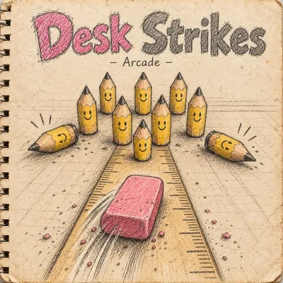
Desk Strikes
https://www.sketchpadarcade.com/desk-strikes
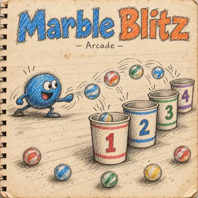
Marble Blitz
https://www.sketchpadarcade.com/marble-blitz
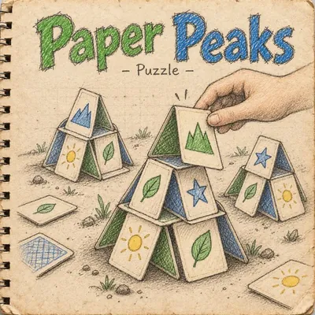
Paper Peaks
https://www.sketchpadarcade.com/paper-peaks
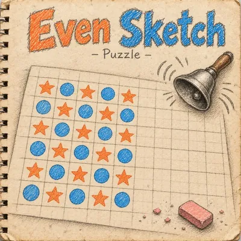
Even Sketch
https://www.sketchpadarcade.com/even-sketch
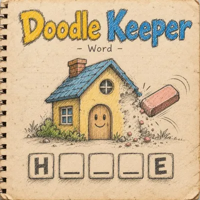
Doodle Keeper
https://www.sketchpadarcade.com/doodle-keeper
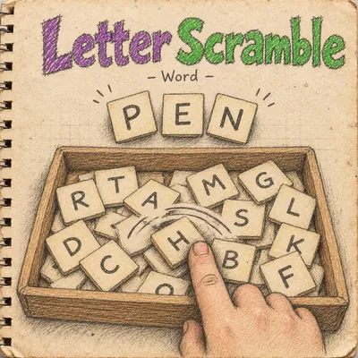
Letter Scramble
https://www.sketchpadarcade.com/letter-scramble
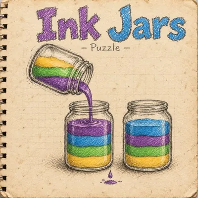
Ink Jars
https://www.sketchpadarcade.com/ink-jars
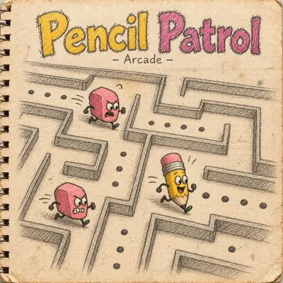
Pencil Patrol
https://www.sketchpadarcade.com/pencil-patrol
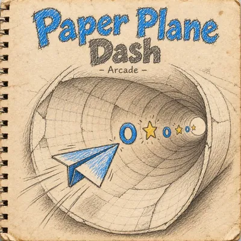
Paper Plane Dash
https://www.sketchpadarcade.com/paper-plane-dash
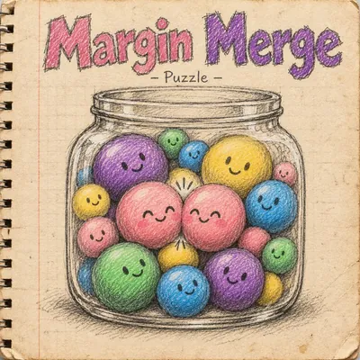
Margin Merge
https://www.sketchpadarcade.com/margin-merge
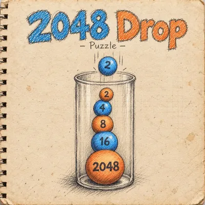
2048 DROP
https://www.sketchpadarcade.com/2048-drop
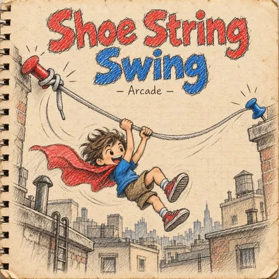
Shoe String Swing
https://www.sketchpadarcade.com/shoe-string-swing
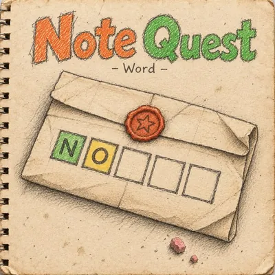
Note Quest
https://www.sketchpadarcade.com/note-quest
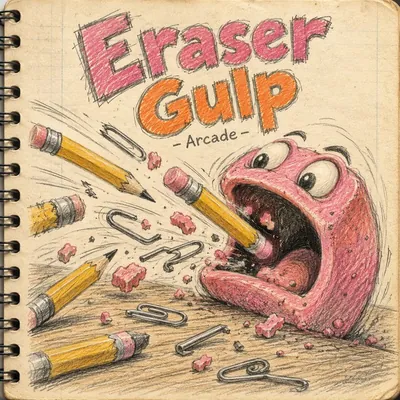
Eraser Gulp
https://www.sketchpadarcade.com/eraser-gulp
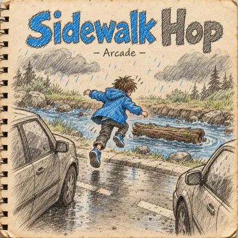
Sidewalk Hop
https://www.sketchpadarcade.com/sidewalk-hop
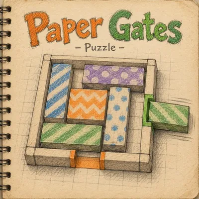
Paper Gates
https://www.sketchpadarcade.com/paper-gates
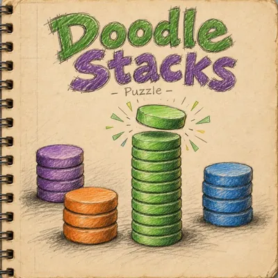
Doodle Stacks
https://www.sketchpadarcade.com/doodle-stacks
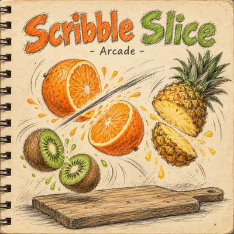
Scribble Slice
https://www.sketchpadarcade.com/scribble-slice
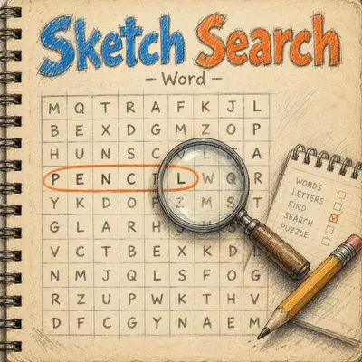
Sketch Search
https://www.sketchpadarcade.com/sketch-search
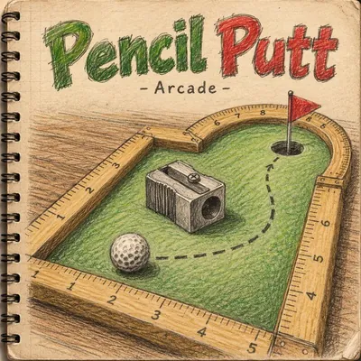
Pencil Putt
https://www.sketchpadarcade.com/pencil-putt
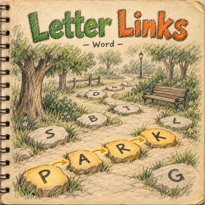
Letter Links
https://www.sketchpadarcade.com/letter-links
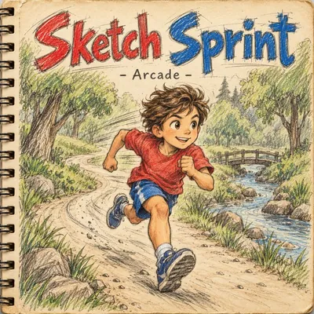
Sketch Sprint
https://www.sketchpadarcade.com/sketch-sprint
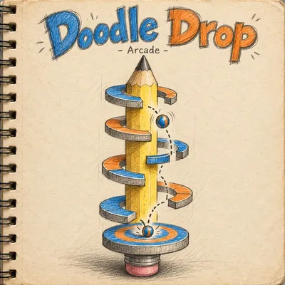
Doodle Drop
https://www.sketchpadarcade.com/doodle-drop
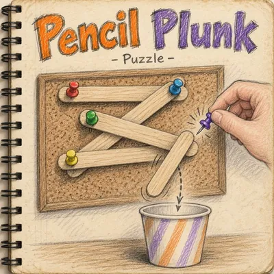
Pencil Plunk
https://www.sketchpadarcade.com/pencil-plunk
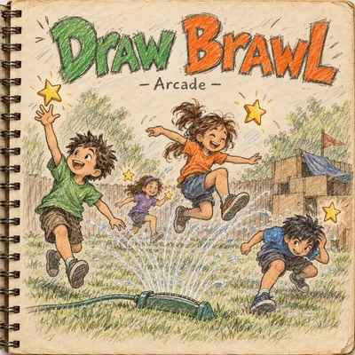
Draw Brawl
https://www.sketchpadarcade.com/draw-brawl
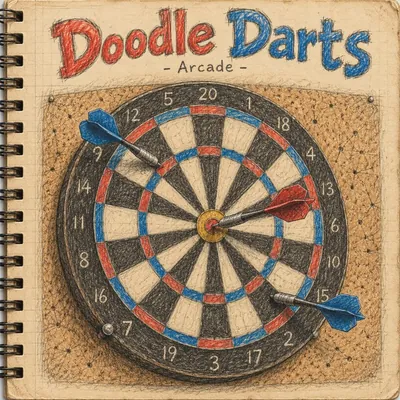
Doodle Darts
https://www.sketchpadarcade.com/doodle-darts
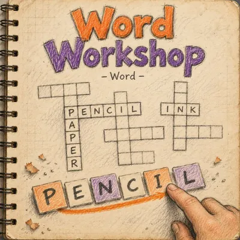
Word Workshop
https://www.sketchpadarcade.com/word-workshop
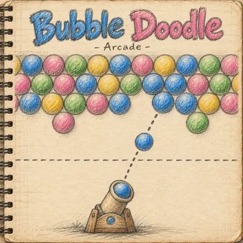
Bubble Doodle
https://www.sketchpadarcade.com/bubble-doodle
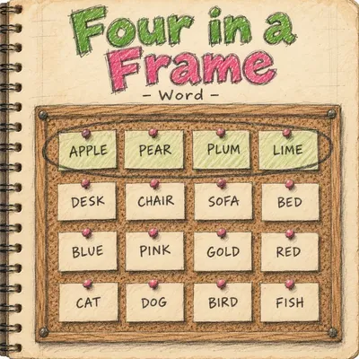
Four in a Frame
https://www.sketchpadarcade.com/four-in-a-frame
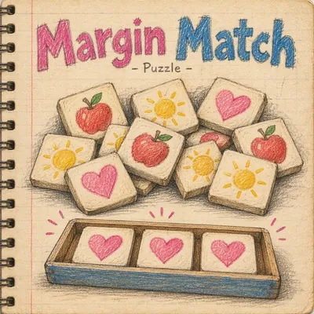
Margin Match
https://www.sketchpadarcade.com/margin-match
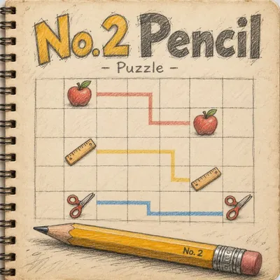
No. 2 Pencil
https://www.sketchpadarcade.com/no-2-pencil
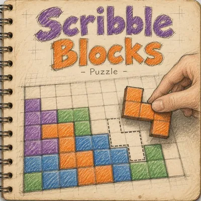
Scribble Blocks
https://www.sketchpadarcade.com/scribble-blocks
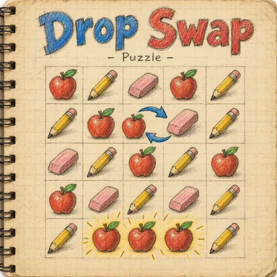
Drop Swap
https://www.sketchpadarcade.com/drop-swap
Pencil Path
https://www.sketchpadarcade.com/pencil-path
Space Blaster
https://www.sketchpadarcade.com/space-blaster
Space Glass
https://www.sketchpadarcade.com/space-glass
Chibi Chib
https://www.sketchpadarcade.com/chibi-chib
Word Scribble
https://www.sketchpadarcade.com/word-scribble